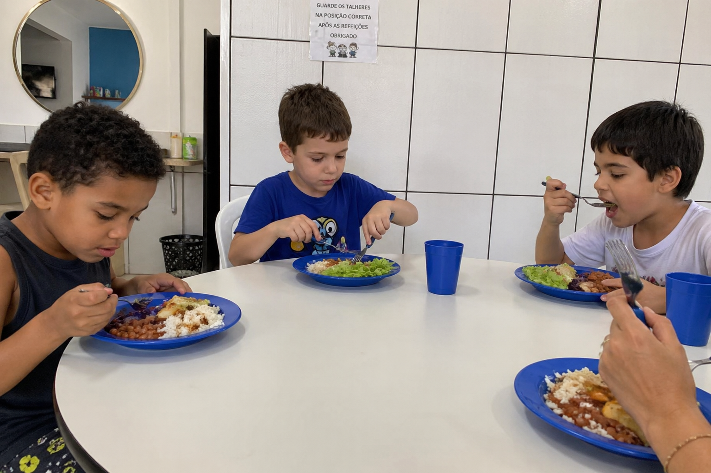

Inclusão e autismo
Inclusão significa garantir que a criança participe da vida escolar, social e comunitária, com suporte para se sentir acolhido e e possa desenvolver suas habilidades. Na prática, isso envolve:

- Adaptações no ambiente e nas atividades para respeitar o jeito de aprender e se comunicar.
- Treinamentos de professores e colegas para compreender o autismo e promover respeito.
- Apoio especializado dentro da escola.